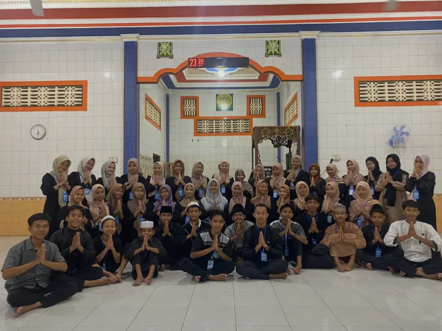
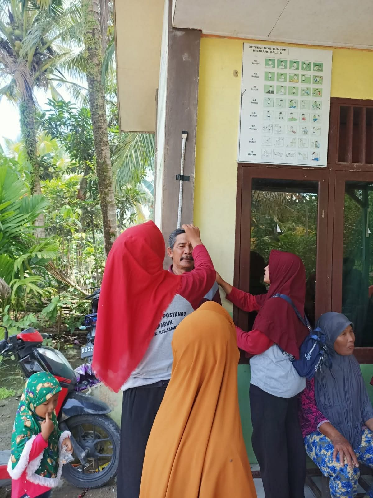
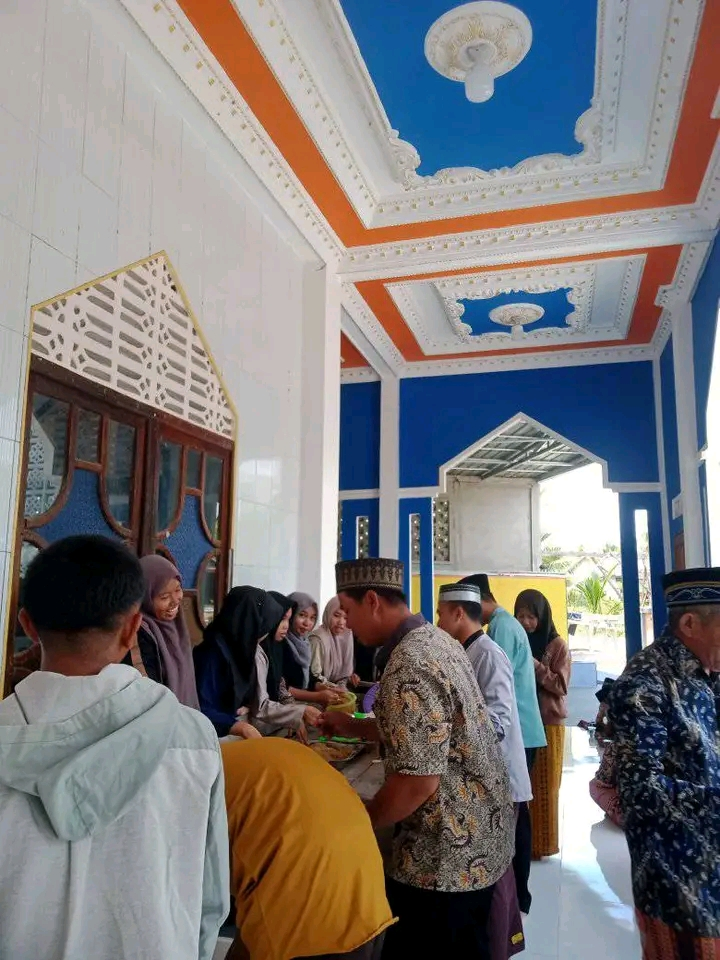
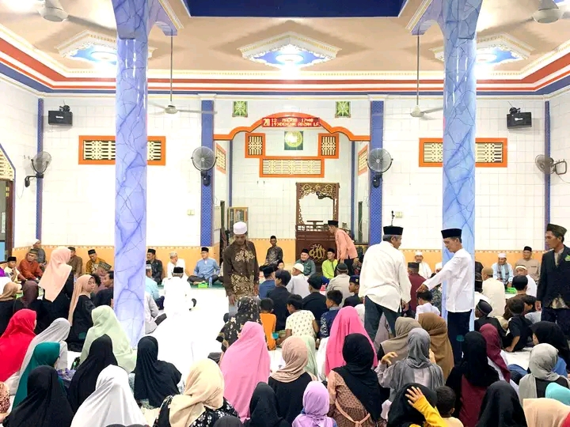
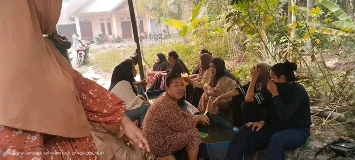
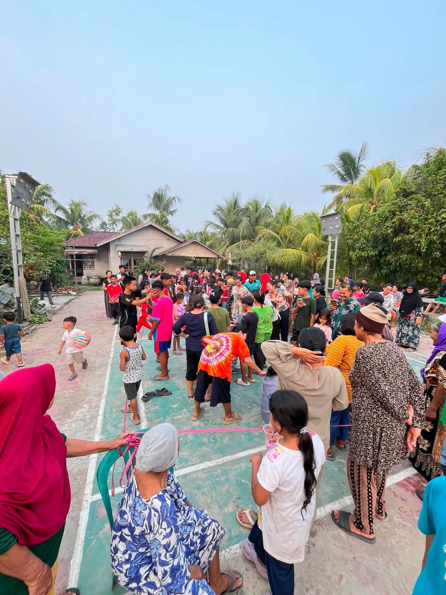

Momen dan Cerita Desa
Kumpulan dokumentasi yang menggambarkan kebersamaan, kegiatan, dan kehidupan masyarakat Desa Semparuk.

Kebersamaan Remaja Masjid
Menjalin silaturahmi, mempererat persaudaraan, dan aktif dalam kegiatan masjid.

Posyandu Lansia
Kegiatan pelayanan kesehatan bagi masyarakat lanjut usia Desa Semparuk.

Berbagi Makanan
Momen berbagi dan mempererat kebersamaan masyarakat Desa Semparuk.

Peringatan Maulid Nabi
Momen keagamaan dan kebersamaan masyarakat di masjid. 🕌✨

Gotong Royong
Bersama-sama menyiapkan dan membersihkan perlengkapan selama acara.

Lomba Kemerdekaan 🇮🇩
Semangat dan keceriaan warga dalam memeriahkan 17 Agustus.
Bagikan Pesanmu
Isi buku tamu untuk meninggalkan pesan tentang Desa Semparuk.